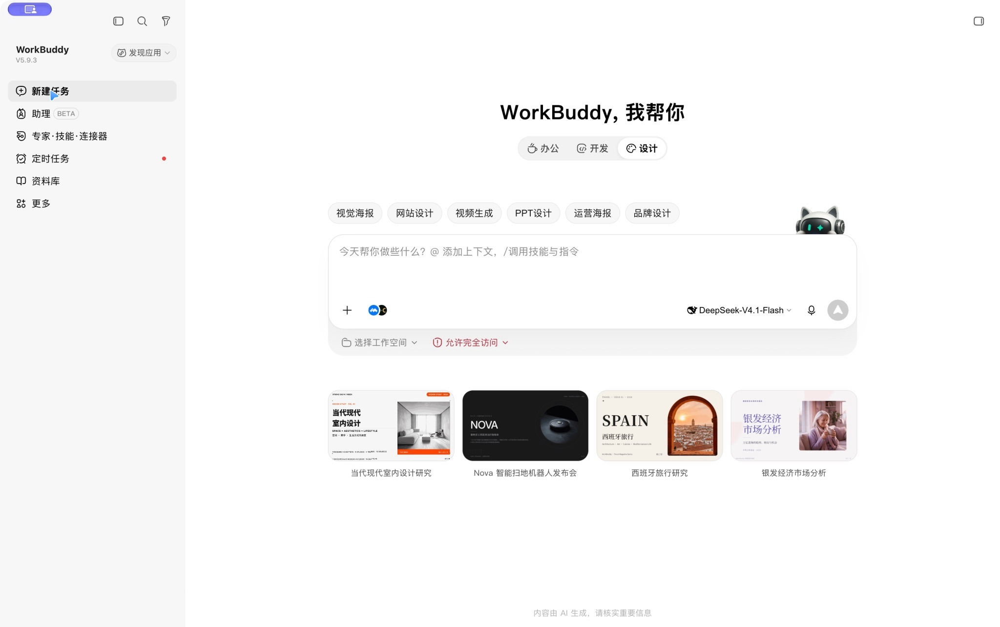
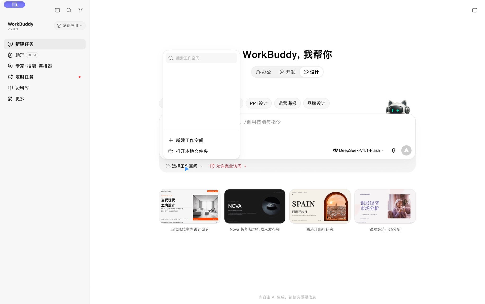
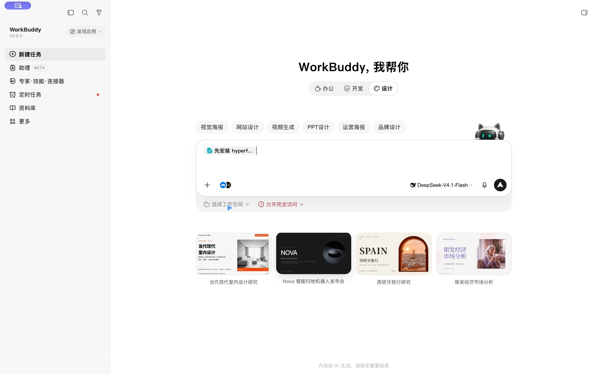

一段提示词
让 WorkBuddy 1:1 复刻这条爆款剪辑视频
跟着做 5 步，不用写代码




github.com/adonis0123/ai-code-video-prompts
prompts/editor-replica.md
复制已复制
【】里的内容都能改
先安装 hyperframes 技能，然后帮我 1:1 复刻这条剪辑视频……
正在安装 hyperframes 技能…已安装 hyperframes 技能
npx skills add heygen-com/hyperframes
写好动画代码 index.html
渲染中0%
已完成
editor-replica.mp4
提示词已开源
github.com/adonis0123/ai-code-video-prompts
复制提示词，把【】里的名字和台词换成你的
第 1 步第 2 步第 3 步第 4 步第 5 步
先打开 WorkBuddy
点左上角的「新建任务」
点输入框下方的「选择工作空间」
选「新建工作空间」，建一个空文件夹
到开源仓库，复制提示词
粘进输入框，长文会自动折叠
复制前先把【】里的名字和台词换成你的
点右下角的发送按钮
剩下交给它：装工具、写代码、渲染
看到「已完成」就好了
打开生成的 editor-replica.mp4
这就是这段提示词做出的成片

跟我做！
就是它！
改成你的！
我在忙…
成片到手！